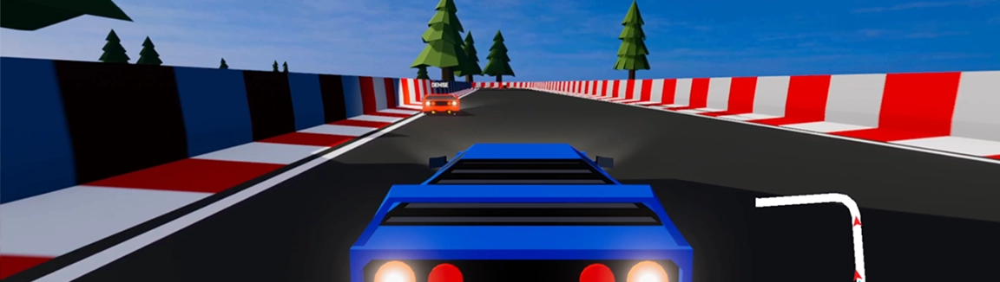

The Final N
Project Description
The Final N is a 4-player multiplayer racing game which utilizes client-server model. A player needs to host a game, while the players who would like to join needs to enter the host's IP address. The team used ZeroTier that allowed connecting between the players and it is where the address of the host is provided.
This group project was made using C# and Unity for our course: Introduction To Networks And Its Application In Games.
Members
- Mañalac, Cesar Dominic
- Olivarez, Setiel
- Santos, John Adriel
- Taiza, Maria Alyssa Denise
Video Presentation
Role In Project
My role for this project is Lead Developer and worked around both backend and frontend and provided ease of use for the reusable functions that can be used by other developers. I have developed the core game mechanics and the multiplayer interactions for the game. I oversee the progress of the game build through utilization of source control and make sure that every feature implemented by other developers are working properly
Specific Distributions
- Unity server and client setup
- Packet Handlers and Thread Manager
- TCP connections
- Made sure interactions for server and client functionality are managed properly to prevent cheating from client side
- Car steering & functionality
- Systems: checkpoint, placement, timer, chat
- Car Visuals: head lights, brake lights, smoke, skid trails
- Tree LOD setup
- Bug fixes
Copyright Disclaimer
The music used for this educational project is from Initial D series.